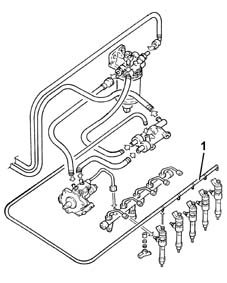

1060D Injector high pressure fuel circuit check
- Path
- Test > 10 ENGINE > 1060 DIESEL FUEL INJECTION SYSTEM > 1060D Injector high pressure fuel circuit check
- Kind
- test / check procedure
- Applies to
- all engines; all production periods
- Interactive page
- https://sloeber94.github.io/elrnDB-lThss/en/#/162715
Applies to: engines: 2.4 JTD 10V, 2.4 JTD 20V; all production periods
Disconnect the electrical connections from all the injectors.
1. Disconnect the fuel recirculation pipes from all the injectors.
Connect the Examiner diagnostic equipment.
Display the "diesel pressure measured" and "engine rpm" parameters on the "Control Unit Test" parameters screen.
Turn the ignition key to the AVV position for 5 seconds and check that the fuel pressure is above 300 bar with the engine speed above 200 rpm.
